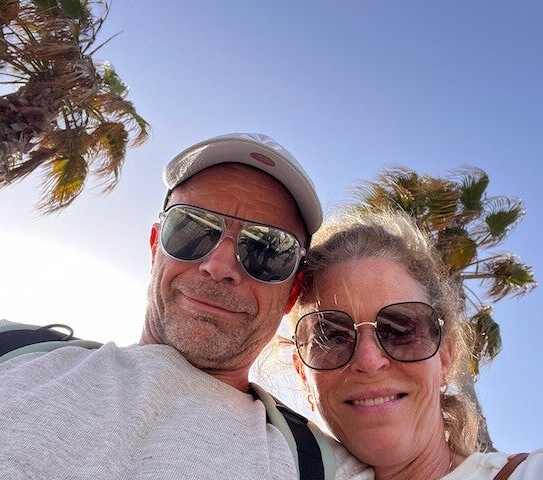
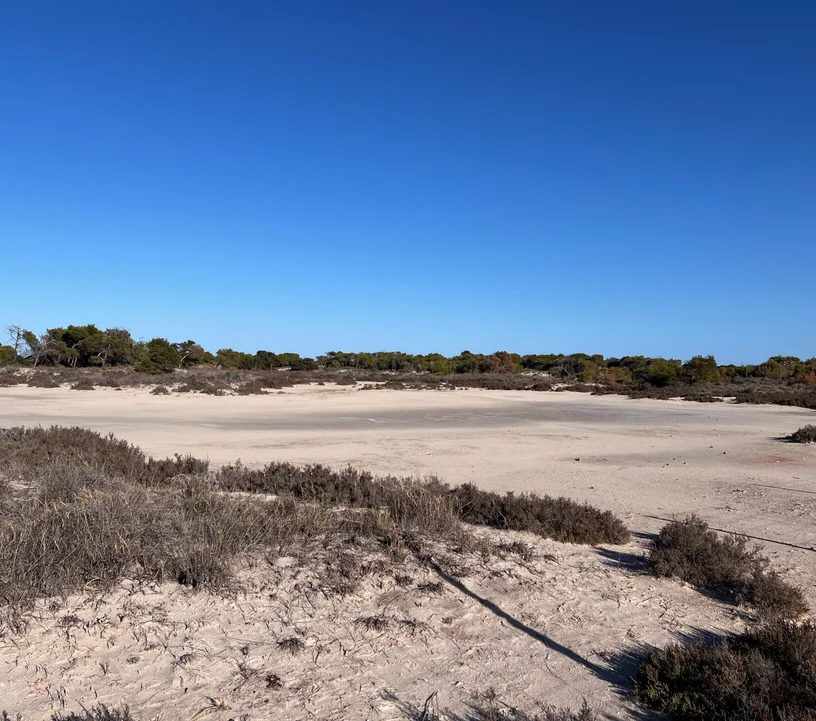

Welkom bij Casa Calida! Wij zijn Helene en Alex, de blije en trotse eigenaren van dit penthouse, gevestigd in Pilar de la Horadada aan de Costa Calida. Bo en Puck zijn onze dochters. Onze droom en de bijbehorende zoektocht naar een uitvalsbasis voor ontspanning, lekker eten en drinken en een fijn klimaat heeft ons naar Spanje gebracht.


En daar zijn we, met hulp van Coert, enthousiasme van Jose Marie en support van Daphne, op slag verliefd geworden op de Costa Calida. Waarom? Tja, leg dat maar eens uit.
In Pilar de la Horadada, San Pedro del Pinatar en Lo Pagan proefden we de ontspannen, authentieke Spaanse sfeer en dat gaf ons een heel fijn en energiek gevoel. Waarom zou je dan nog verder zoeken?
Aan een heerlijk glas wijn en een tapasplankje op een zwoele juniavond in Cartagena hebben we besloten om te gaan voor Casa Calida in Pilar de la Horadada. Stel je een gezellig dorpspleintje in Pilar voor, waar je een praatje in Duolingo Spaans maakt met de Spaanse mevrouw van de lokale supermarkt. De lokale gastrobar waar de eigenaar trots vertelt over al zijn mooie wijnen en ongevraagd een heerlijke jamón voor je neerzet.
De langgerekte rustige stranden en de ruige kustlijn vormen een ander Spanje, dat wat het voor ons zo bijzonder en aantrekkelijk maakt. Geen massaal toerisme en overvolle stranden. Authentieke dorpjes, mooie steden, natuur en de Middellandse Zee met lange, lange stranden.
Vanuit een fantastische uitvalsbasis waar je helemaal jezelf kunt zijn en veel privacy hebt. Dat vinden we nog elke keer bijzonder en we verlangen naar ons volgende bezoek.
De enthousiaste reacties over ons avontuur in Spanje en onze Casa Calida hebben ons geïnspireerd om dit te willen delen met anderen. Het delen van een droom om samen te kunnen genieten van het heerlijke klimaat en de mooie regio Costa Calida van Spanje.
Ons penthouse is echt geweldig en biedt alle comfort en luxe die je je kunt wensen. Door onze Casa Calida te huur aan te bieden, geven we ook jou de kans op een onvergetelijk verblijf in een ander Spanje, waar je even helemaal tot rust kan komen.
We zijn nu al trots en gelukkig met alle mooie feedback die we ontvangen en kijken ernaar uit om ook jou binnenkort te verwelkomen in onze casa.